מה זה Claude Desktop ולמה להתקין?
Claude Desktop היא האפליקציה הרשמית של Anthropic למחשב. זה אותו Claude שאתם מכירים מהדפדפן: אותו חשבון, אותן שיחות, אותם מודלים, בתוך אפליקציה שמותקנת על המחשב עצמו, נפתחת מתפריט Start כמו Word או Outlook, ויושבת לכם בשורת המשימות.
חשוב להבין כבר עכשיו: ההתקנה לא יוצרת "חשבון שני". השיחות והפרויקטים שמורים בחשבון שלכם, ולכן שיחה שהתחלתם בדפדפן תופיע באפליקציה, ופרויקט שפתחתם באפליקציה יופיע בדפדפן. החריג העיקרי: משימות Cowork שרצות על המחשב עצמו, ופרויקטים שמקושרים לתיקייה במחשב (סעיף 3).
אז למה בכלל להתקין, אם זה אותו Claude? משלוש סיבות עיקריות:
- סביבת עבודה נקייה. בדפדפן, Claude הוא עוד לשונית בין עשרות לשוניות, נבלע בין תיבת המייל, נט המשפט והחדשות. באפליקציה הוא חלון עבודה בפני עצמו: קל למצוא, קל לחזור אליו, קל לעבוד בו לצד מסמך פתוח.
- חיבור למחשב עצמו. רק באפליקציה אפשר לחבר את Claude לתוכנות ולקבצים שעל המחשב, באמצעות תוספים שנקראים Extensions. נרחיב על כך בסעיף 8.
- שער ליכולות המתקדמות. היכולת המשמעותית ביותר, עבודה של Claude במצב Cowork על תיקיות וקבצים אמיתיים במחשב המשרד, עוברת תמיד דרך האפליקציה. זהו הנושא של המדריך הבא בסדרה.
עמדת Legal Mind
אנחנו פוגשים לא מעט עורכי דין שנרתעים מהתקנת תוכנות: "עוד תוכנה", "מי יודע מה זה משנה במחשב". אז נאמר את זה ברור: ההתקנה עצמה היא התקנה רגילה לחלוטין, כמו Zoom או Word. היא לא דורשת ידע טכני, לא נוגעת בקבצים שלכם בלי רשותכם, ואפשר להסיר אותה בכל רגע, כמו כל תוכנה אחרת. רק לעבודת Cowork על קבצים במחשב ייתכן שיהיה צורך ברכיב נוסף של Windows, ועל כך בסעיף 4. ובמהלך ההתקנה תראו בעצמכם את האישור הרשמי של Windows לכך שהקובץ חתום על ידי Anthropic. המדריך הזה מלווה אתכם מסך אחר מסך, כולל צילום של כל שלב.
Claude בדפדפן מול Claude Desktop: מה באמת ההבדל?
נתחיל ממה שלא משתנה. החשבון שלכם אחד. ההיסטוריה, הפרויקטים, ה-Skills והמודלים זהים בדפדפן ובאפליקציה, חוץ ממשימות Cowork שרצות על המחשב עצמו (סעיף 3). אפשר להשתמש בדפדפן ובאפליקציה במקביל, באותו יום ואפילו באותה שעה: להתחיל טיוטה במשרד באפליקציה ולהמשיך אותה בערב מהדפדפן במחשב הבית.
| Claude בדפדפן | Claude Desktop | |
|---|---|---|
| חשבון, שיחות ופרויקטים | כן | כן, אותו חשבון, מסונכרן |
| חלון עבודה | נבלע בין הטאבים | אפליקציה עצמאית |
| חיבור לשירותי ענן (Gmail, Drive) | כן | כן, אותם חיבורים |
| חיבור לקבצים ולתוכנות במחשב (Extensions) | לא | כן |
| עבודת Cowork על קבצים במחשב | רק במשימה שהתחילה באפליקציה במחשב | כן (מדריך נפרד) |
| מסמכים ומצגות (Docs, Slides, Design) | כן | כן |
| עדכוני גרסה | אוטומטי | אוטומטי |
נעבור על השורות החשובות בטבלה, אחת אחרי השנייה:
חלון עבודה עצמאי. נשמע כמו הבדל קטן, אבל בעבודה יומיומית הוא מורגש מאוד. כשאתם באמצע ניסוח חוזה ורוצים להתייעץ עם Claude, אתם לא מחפשים את הלשונית הנכונה בין עשרים לשוניות פתוחות: האפליקציה שם, קליק אחד בשורת המשימות. אפשר להצמיד אותה לצד מסמך Word פתוח ולעבוד בשני החלונות במקביל.
חיבור לתוכנות ולקבצים. כאן צריך להבחין בין שני סוגי חיבורים. חיבורים לשירותי ענן, כמו Gmail, Google Drive ו-Slack, נקראים Connectors, והם עובדים בכל מקום שבו אתם משתמשים ב-Claude: בדפדפן, באפליקציה ובטלפון. מה ששמור לאפליקציה הוא החיבור למחשב עצמו: תוספים שנקראים Extensions, שמחברים את Claude לקבצים ולתוכנות שעל המחשב. לפי Anthropic, הם עובדים רק באפליקציות למחשב, Claude Desktop ו-Claude Code, ולא בדפדפן או בטלפון. פירוט בסעיף 8.
עבודת Cowork על קבצים במחשב. זו הסיבה הגדולה באמת. במצב Cowork, Claude לא רק עונה לשאלות. הוא מבצע עבודה: מקבל גישה לתיקייה שבחרתם, קורא את הקבצים, יוצר מסמכים, מארגן ומסכם, ומגיש לכם תוצר מוגמר. את Cowork עצמו אפשר להפעיל גם מהדפדפן ומהטלפון, אבל הגישה לתיקיות ולקבצים שעל המחשב שלכם עוברת תמיד דרך האפליקציה: היא פועלת רק כל עוד האפליקציה פתוחה על אותו מחשב, ורק כשהמשימה עצמה התחילה באפליקציה. זהו נושא המדריך הבא בסדרה.
רגע, ואיפה המתג של Cowork? שאלה טובה, והתשובה השתנתה לאחרונה. ב-16 בספטמבר 2026 הודיעה Anthropic ש-Cowork והצ'אט מתאחדים ל-Claude אחד: במקום שתחליטו מראש אם מה שאתם צריכים הוא "שיחה" או "משימה", אתם פשוט כותבים מה אתם צריכים, ו-Claude מחליט בעצמו אם זו תשובה מהירה או עבודה של ממש. השינוי יוצא בהדרגה, קודם למנויי Pro ו-Max. לפי Anthropic, במנויי Team ו-Enterprise הצ'אט ו-Cowork נשארים בינתיים כמו שהם. לכן ייתכן שאצל חלק מכם המתג בין Chat ל-Cowork כבר נעלם מתיבת הכתיבה, ואצל אחרים הוא עדיין שם. שני המצבים תקינים. וכלל פשוט לכל המדריך: בכל מקום שבו כתוב "מצב Cowork", אם אין לכם מתג, פשוט כתבו את המשימה.
באותו יום נוספו גם Claude Docs ו-Claude Slides: מבקשים מסמך או מצגת, ו-Claude מכין אותם בתוך השיחה. אפשר לערוך אותם בעצמכם או לבקש מ-Claude לשנות, ואחר כך לשתף בקישור או לייצא. לפי Anthropic, הם בגרסת בטא, והם זמינים בדפדפן ובאפליקציה כאחד. במנוי Enterprise הם כבויים עד שבעל הארגון מפעיל אותם. זו לא סיבה להתקין, אבל זו סיבה טובה לא להיבהל כשתראו כפתורים חדשים.
עדכוני גרסה. גם כאן אין מה לעשות. לפי Anthropic, האפליקציה בודקת בעצמה בערך כל ארבע שעות אם יש גרסה חדשה, ומתקינה אותה אוטומטית.
ואם לסכם בשורה אחת: הדפדפן מצוין לשיחה. האפליקציה הופכת את Claude לחלק מסביבת העבודה של המשרד.
ומה לגבי אפליקציית הטלפון? היא מצוינת לשאלות תוך כדי תנועה, בדרך לדיון, בין פגישות, ואפשר גם לפתוח ממנה משימת Cowork ולעקוב אחריה. מה שהיא לא יכולה לעשות לבדה הוא להגיע לקבצים שעל מחשב המשרד: לשם כך המשימה צריכה להתחיל באפליקציה במחשב, והאפליקציה צריכה להיות פתוחה. שלושת הערוצים, דפדפן, מחשב וטלפון, חיים יחד באותו חשבון ומשלימים זה את זה.
אבטחת מידע: מה חשוב לדעת
השאלה הראשונה שעורכי דין שואלים אותנו על האפליקציה היא כמעט תמיד שאלת אבטחה: "אם אני מתקין את זה על המחשב של המשרד, מה זה אומר על המידע שלי?"
התשובה העקרונית: מה שקובע איך Anthropic מטפלת במידע שלכם הוא סוג המנוי, לא השאלה אם אתם עובדים בדפדפן או באפליקציה. עם זאת, יש שלוש נקודות שכדאי להכיר לפני שמתקינים:
נקודה ראשונה: האפליקציה אינה "סורקת את המחשב". היא מגיעה רק למה שאתם מאפשרים לה: קובץ שצירפתם לשיחה, שירות שחיברתם ב-Connectors, תוסף שהתקנתם ב-Extensions, או תיקייה שאישרתם ל-Cowork. יוצאת דופן היא היכולת שבה Claude מפעיל בעצמו תוכנות במחשב (computer use), שנמצאת בגרסת בטא במנויי Pro ו-Max: לפי Anthropic, היא רואה כל מה שמוצג על המסך, ו-Anthropic עצמה ממליצה בחום לא להשתמש בה לטיפול במסמכים משפטיים ובחוזים.
נקודה שנייה: לפי Anthropic, משימות Cowork רצות כברירת מחדל בענן, בשרתים של Anthropic, וגם קבצים מהמחשב שהמשימה פותחת דרך האפליקציה מעובדים שם, ולא נשארים במחשב. במנוי Enterprise ההרצה בענן כבויה, עד שבעל הארגון מפעיל אותה. נקודה שלישית, למשרדים במנוי Team או Enterprise: כש-Cowork רץ על המחשב עצמו, היסטוריית המשימה ונתוני הפרויקט נשמרים על המחשב, ופרויקט שמקושר לתיקייה במחשב עובד עם Cowork רק באפליקציה. לפי Anthropic, ההיסטוריה הזו אינה כפופה למדיניות שמירת המידע הרגילה של Anthropic, ומנהל הארגון לא יכול לנהל או למחוק אותה באופן מרכזי. זו לא סיבה להימנע. זו סיבה לדעת: מי שאחראי על מדיניות המידע במשרד צריך להכיר את זה.
עמדת Legal Mind
חומר של לקוחות מכניסים רק למנוי Team או Enterprise, ולא למנוי אישי (Free, Pro או Max). רק במנויים האלה חלות ההתחייבויות החוזיות של Anthropic כלפי המשרד בנוגע לפרטיות המידע (DPA). הנושא כולו, למה דווקא Team, מה בדיוק כולל ה-DPA, ואיך עוברים מהמנוי הקיים בבטחה ובלי לאבד דבר, מוסבר בהרחבה במדריך המקיף של Legal Mind: מעבר בטוח למנוי Team ב-Claude. איננו חוזרים כאן על התוכן: הוא מחכה לכם שם, מסודר ומלווה צעד אחרי צעד.
לפני ההתקנה: דרישות מערכת
הדרישות לפי Anthropic:
- Windows 10 ומעלה, כלומר גם Windows 10 וגם Windows 11.
- במחשבי Mac: macOS 11 (Big Sur) ומעלה.
- במחשב Windows יופיעו בעמוד ההורדה שני כפתורים, כמו בצילום שבשלב 1: Download for Windows ו-Windows (arm64).
לצ'אט עצמו צריך רק את מה שלמעלה וחיבור אינטרנט פעיל, בדיוק כמו בדפדפן.
ל-Cowork במחשב, כלומר עבודה על הקבצים שבמחשב, יש ב-Windows שלוש דרישות נוספות, וכדאי להכיר אותן לפני ההתקנה, לא אחריה:
- הרשאות מנהל בזמן ההתקנה. לפי Anthropic, כדי ש-Cowork יעבוד במחשב צריך להתקין עם הרשאות מנהל, ובזמן ההתקנה מופיע חלון האבטחה של Windows (שלב 3). מי שמתקין בלי הרשאות מנהל מקבל את Claude Desktop, אבל Cowork במחשב לא יהיה זמין לו.
- הגרסה האחרונה של האפליקציה. לפי Anthropic, Cowork דורש את הגרסה העדכנית ביותר של Claude ל-Windows.
- רכיב של Windows בשם Virtual Machine Platform. לפי Anthropic, Claude Desktop ל-Windows צריך את הרכיב הזה כדי להפעיל את Cowork, ומחלקת המחשוב יודעת להפעיל אותו. לפי Anthropic, אחרי הפעלת הרכיב מפעילים את המחשב מחדש בפקודה Restart, ולא בכיבוי והדלקה. שימו לב: לפי Anthropic, במחשב וירטואלי (VDI) בלי תמיכה בווירטואליזציה מקוננת, Cowork לא ירוץ.
המדריך מדגים את ההתקנה על Windows. ב-Mac התהליך מקביל: מורידים את הקובץ מאותו עמוד, פותחים אותו להשלמת ההתקנה, ומפעילים את Claude מתיקיית Applications.
הערה למחשבי Windows עם מעבד ARM (דגמים מסוימים של מחשבים ניידים חדשים): בעמוד ההורדה יש כפתור נפרד, Windows (arm64). אם אינכם יודעים מה סוג המעבד שלכם, שאלו את מחלקת המחשוב לפני ההורדה.
ונקודה אחת שכדאי לדעת מראש במשרדים עם מחלקת מחשוב: אם המחשבים במשרד מנוהלים על ידי גורם IT, ייתכן שהתקנת תוכנות דורשת את אישורו, כמו כל תוכנה. במקרה כזה, שלחו לו את המדריך הזה, ובעיקר את הסעיף הזה: אם ה-IT מתקין עבורכם, שיתקין עם הרשאות מנהל ויוודא שה-Virtual Machine Platform מופעל, אחרת Cowork לא יעבוד, ואף אחד לא יבין למה. למשרדים שמתקינים על הרבה מחשבים בבת אחת, ל-Anthropic יש עמוד ייעודי למחלקות מחשוב (באנגלית).
התקנה שלב אחר שלב
התהליך קצר, מהורדה ועד אפליקציה עובדת, ועוברים אותו פעם אחת בלבד.
שלב 1: הורדת קובץ ההתקנה
גלשו בדפדפן לעמוד ההורדה הרשמי של Anthropic:
חשוב: מורידים אך ורק מהעמוד הרשמי הזה. לא מאתרי הורדות, לא מקישורים במייל. זה הכלל לכל תוכנה, ובוודאי לתוכנה שתעבוד לצד חומר מקצועי.
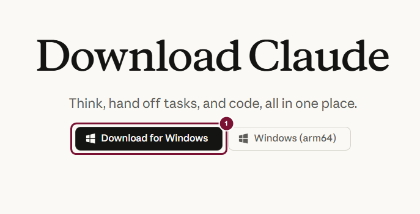
- 1לחצו על Download for Windows להורדת קובץ ההתקנה. הכפתור שלידו, Windows (arm64), מיועד רק למחשבים עם מעבד ARM (סעיף 4).
שלב 2: איתור הקובץ שהורד
ההורדה קצרה. בסיומה, לחצו על אייקון ההורדות של הדפדפן (החץ כלפי מטה, ליד סרגל הכתובת), ותראו את הקובץ שהתקבל. שם הקובץ מתחיל ב-Claude Setup. אם הורדתם אותו יותר מפעם אחת, יופיע בשם גם מספר, כמו בצילום: Claude Setup (1).exe.
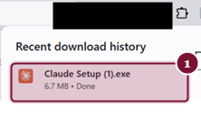
- 1הקובץ שהורד: לחצו עליו להפעלת ההתקנה. אפשר גם לאתר אותו בתיקיית ההורדות (Downloads) וללחוץ עליו לחיצה כפולה.
שלב 3: אישור האבטחה של Windows
מיד אחרי הלחיצה יופיע חלון אבטחה של Windows, על רקע מסך שמתכהה. אל תיבהלו: זהו חלון תקין וצפוי, שמופיע בכל התקנת תוכנה. כך Windows מוודאת שאתם מאשרים את ההתקנה ביודעין, ובאותה הזדמנות היא מציגה לכם בדיקה חשובה: מי חתום על הקובץ.
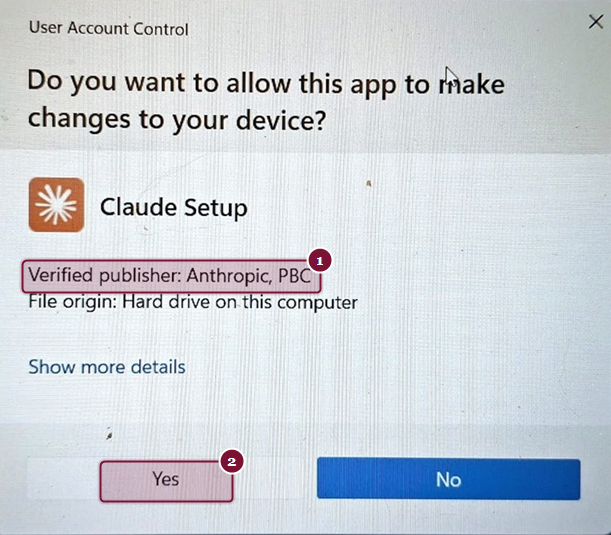
- 1השורה החשובה היא Verified publisher: Anthropic, PBC. זהו אישור רשמי של Windows שהקובץ חתום דיגיטלית על ידי Anthropic עצמה ולא שונה בדרך. זה בדיוק מה שמבדיל התקנה בטוחה מקובץ מפוקפק, ואם השורה הזו מופיעה, אתם בידיים טובות.
- 2אחרי שווידאתם, לחצו Yes. אם במקום כפתור Yes החלון מבקש שם משתמש וסיסמה של מנהל, עצרו ופנו למחלקת המחשוב: בלי הרשאות מנהל, Cowork במחשב לא יעבוד (סעיף 4).
שלב 4: ההתקנה רצה מעצמה
מכאן הכל אוטומטי. חלון ההתקנה מוריד את רכיבי האפליקציה ומתקין אותם בעצמו: אין צורך לבחור תיקייה, לאשר שלבים או ללחוץ "הבא". הזמן תלוי במהירות האינטרנט.
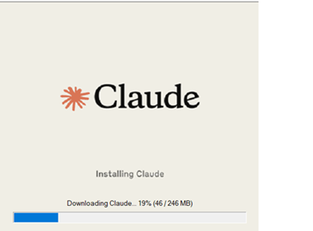
את ההתקנה הזו עושים פעם אחת בלבד. מכאן והלאה, לפי Anthropic, האפליקציה בודקת בעצמה בערך כל ארבע שעות אם יצאה גרסה חדשה, ומתקינה אותה אוטומטית.
אין צורך לחזור לעמוד ההורדה. אם בכל זאת תרצו להתקין מחדש, מורידים את הקובץ מאותו עמוד ומתקינים שוב.
פתיחה ראשונה והתחברות
פתיחת האפליקציה
בסיום ההתקנה, פותחים את האפליקציה דרך תפריט Start, בדיוק כמו כל תוכנה במחשב:
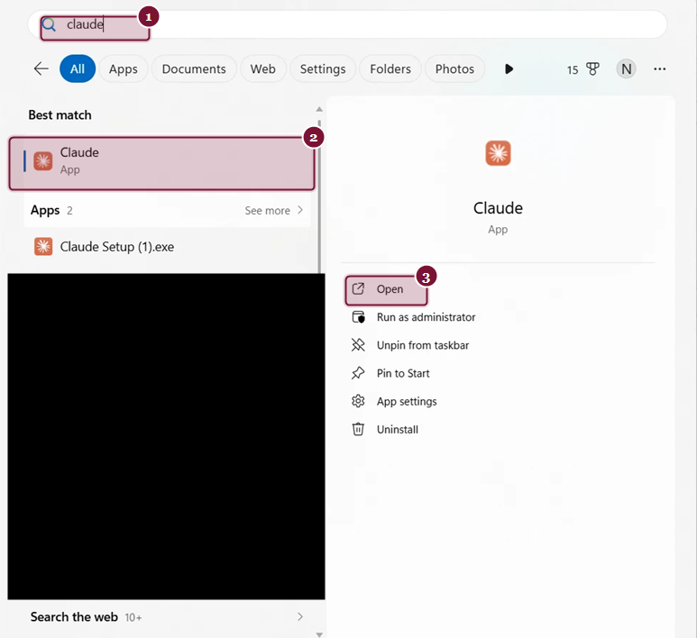
- 1לחצו על מקש Windows במקלדת והקלידו claude.
- 2האפליקציה מופיעה כתוצאה הראשונה, עם האייקון הכתום המוכר.
- 3לחצו Open (או פשוט Enter).
טיפ קטן שחוסך זמן: אחרי הפתיחה הראשונה, לחצו קליק ימני על אייקון האפליקציה בשורת המשימות ובחרו הצמדה (Pin to taskbar). מעכשיו Claude תמיד יהיה קליק אחד מכם, בלי לחפש.
התחברות עם החשבון הקיים
בפתיחה הראשונה האפליקציה תבקש להתחבר. יופיע מסך פתיחה קצר:
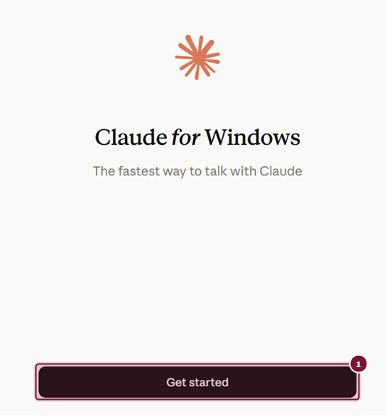
- 1לחצו Get started.
כעת מסך ההתחברות. הנקודה החשובה ביותר בכל הסעיף הזה: היכנסו עם אותו חשבון בדיוק שבו אתם משתמשים ב-Claude בדפדפן: אותה כתובת מייל או אותו חשבון Google. זה מה שמבטיח שכל השיחות, הפרויקטים וההגדרות שלכם יופיעו באפליקציה מהרגע הראשון. חשבון אחר פירושו חשבון חדש וריק.
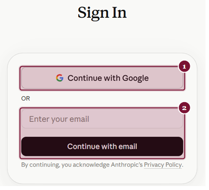
- 1אם אתם נכנסים ל-Claude עם חשבון Google, לחצו Continue with Google.
- 2אחרת, הזינו את כתובת המייל של החשבון ולחצו Continue with email.
האימות עצמו נפתח בדפדפן: זו התנהגות תקינה ומכוונת, כך האפליקציה משתמשת בהתחברות המאובטחת הקיימת שלכם. בסיום האימות יופיע אישור קצר בדפדפן:
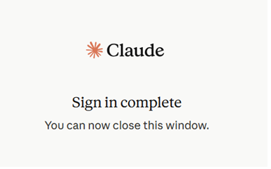
סיור ראשון באפליקציה
המסך הראשי ירגיש לכם מוכר מיד: הוא בנוי כמו Claude בדפדפן. נעבור על מה שרואים, ובעיקר על מה שחדש:
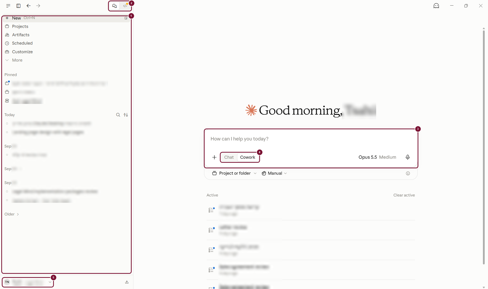
- 1סרגל הצד: השיחות, הפרויקטים וה-Artifacts שלכם, מסודרים לפי ימים, בדיוק כמו בדפדפן. כל מה שעשיתם עד היום נמצא כאן.
- 2שני אזורי עבודה, בשני הסמלים שבראש סרגל הצד: בועת השיחה פותחת את השיחות הרגילות, השימוש היומיומי שבו תבלו את רוב הזמן. הסמל </>, שכשעומדים עליו עם העכבר מופיע לידו Code, פותח את Claude Code. ולכשתרצו, יש לכך מדריכים ייעודיים בסדרה.
- 3תיבת הכתיבה: כותבים ל-Claude בדיוק כמו שאתם רגילים. גם בחירת המודל נמצאת כאן, בפינת התיבה.
- 4המתג בין Chat ל-Cowork, אם הוא מופיע אצלכם: Chat הוא שיחה רגילה. Cowork הוא המצב שבו Claude עובד בעצמו על משימות שלמות, כולל על קבצים במחשב שלכם. במנויי Pro ו-Max המתג נעלם בהדרגה מאז 16 בספטמבר 2026, ו-Claude מחליט לבד מה המשימה צריכה. במנויי Team ו-Enterprise הוא נשאר בינתיים. בשני המקרים העיקרון זהה: כותבים מה צריך, והשאר קורה. על Cowork: במדריך המקיף הנפרד.
- 5ראשי התיבות שלכם: לחיצה עליהם פותחת את תפריט החשבון (בהמשך הסעיף).
שימו לב עד כמה המעבר טבעי: אין שום דבר ללמוד מחדש. מי שיודע לעבוד עם Claude בדפדפן יודע לעבוד באפליקציה, וההיפך. התוספות (כמו Cowork) מחכות לכם בדיוק היכן שסימנו, כשתהיו מוכנים אליהן.
תפריט החשבון
לחיצה על ראשי התיבות שלכם בפינה השמאלית התחתונה פותחת את תפריט החשבון, התחנה המרכזית לניהול:
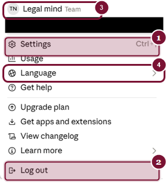
- 1Settings: כניסה להגדרות האפליקציה.
- 2Log out: התנתקות מהחשבון.
- 3שם החשבון שאליו אתם מחוברים.
- 4Language: בחירת שפת הממשק.
מה יש באפליקציה ומה שמור רק לה
סעיף זה הוא סקירה: המטרה שתדעו מה קיים ואיפה למצוא אותו. ההדרכות המפורטות, כולל שיקולי המדיניות המשרדית, נמצאות במדריכים הייעודיים של הסדרה.
הגדרות האפליקציה
נפתח את ההגדרות (תפריט החשבון ואז Settings). כך נראה המסך שנפתח:
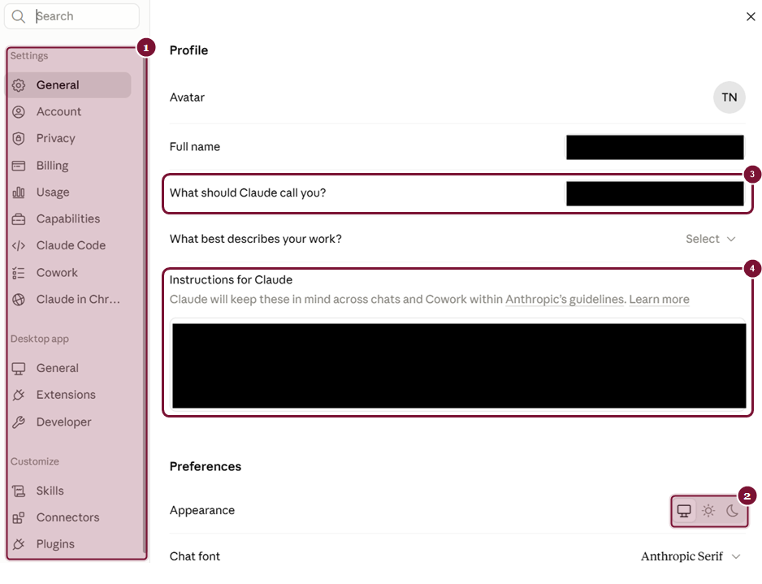
- 1קטגוריות ההגדרות. רובן מוכרות מהדפדפן, ושימו לב לקבוצה Desktop app: הגדרות שקיימות רק באפליקציה, ובהן Extensions (בהמשך הסעיף).
- 2Appearance: מראה בהיר, כהה, או לפי הגדרת המחשב. מתחתיו גם בחירת גופן התצוגה.
- 3What should Claude call you?: איך Claude יפנה אליכם.
- 4Instructions for Claude: הנחיות קבועות שילוו כל שיחה, למשל העדפות שפה וסגנון כתיבה. לפי Anthropic, הן חלות על כל השיחות, לא רק באפליקציה.
חיבור לשירותים: Connectors
Connectors מאפשרים ל-Claude להתחבר לשירותים שאתם עובדים איתם: לקרוא מהם מידע ולעבוד איתם ישירות מתוך השיחה, בהתאם להרשאות שאישרתם. החיבורים שתראו כאן, כמו Gmail ו-Google Drive, אינם בלעדיים לאפליקציה, והם עובדים גם בדפדפן. לפי Anthropic, יש גם חיבור ל-Microsoft 365. לפי Anthropic, מגיעים אליהם דרך Customize ואז Connectors, ואת Customize תמצאו גם בסרגל הצד של האפליקציה. בחלון ההגדרות זה נראה כך:
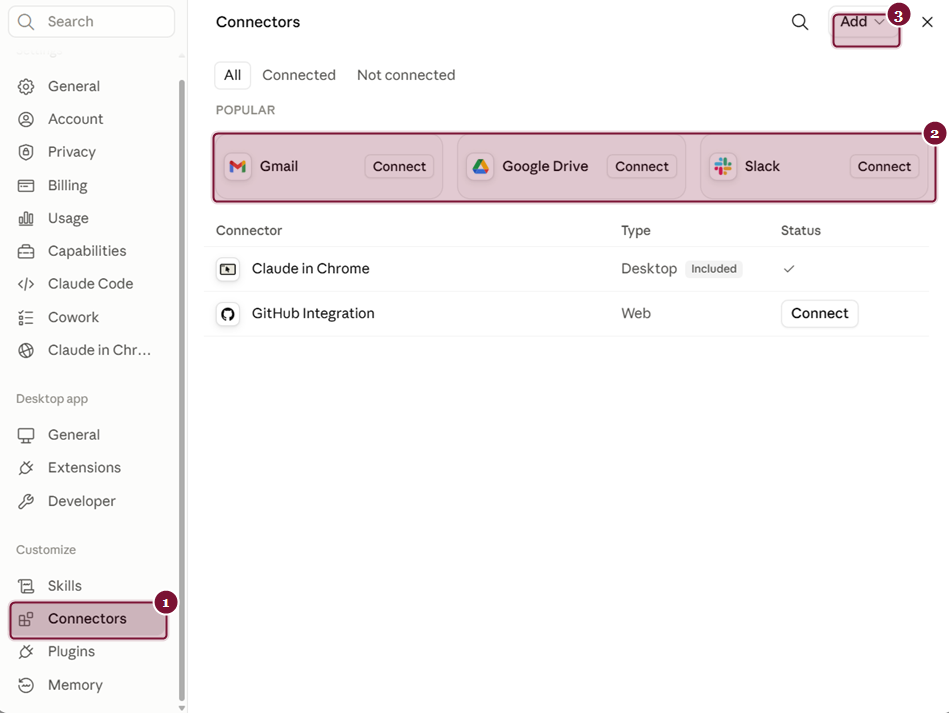
- 1הקטגוריה Connectors בתפריט ההגדרות (תחת Customize).
- 2החיבורים הפופולריים מוצגים ראשונים: Gmail, Google Drive ו-Slack. חיבור מתבצע בלחיצת Connect ואישור הרשאות. לפי Anthropic, במנוי Team בעלי הארגון צריכים קודם לאפשר את החיבור לארגון, ואחר כך כל אחד מתחבר בעצמו.
- 3הכפתור Add פותח תפריט להוספת חיבורים נוספים, מעבר למה שמוצג בעמוד.
מה זה נותן בפועל? דוגמה: אחרי חיבור Google Drive, אפשר לבקש מ-Claude לאתר מסמך ולעבוד עליו, בלי להוריד ולהעלות קבצים ידנית. החיבורים הם אישיים לחשבון שלכם, ואת כל חיבור אפשר לנתק באותו מסך בכל רגע.
חיבור שירותים בסביבה משרדית הוא החלטה של מדיניות, לא רק של נוחות: חיבור Connector משמעו שמידע מהשירות המחובר נגיש ל-Claude במסגרת השיחות שלכם. לפני חיבור בארגון, ודאו שהדבר תואם את מדיניות המשרד, ומי מוסמך לאשר זאת. ראו הרחבה על קביעת מדיניות משרדית במדריך המעבר למנוי Team.
מה עוד שמור ל-Desktop
- תוספים למחשב: Extensions. לפי Anthropic, אלה תוספים שמחברים את Claude לתוכנות ולקבצים שעל המחשב, והם עובדים רק באפליקציות למחשב, ולא בדפדפן או בטלפון. מוצאים אותם בהגדרות, ב-Settings ואז Extensions. גם כאן, לפני שמתקינים תוסף במחשב משרדי, ודאו שהוא תואם את מדיניות המשרד.
- שורת שאלה מהירה (לא קיימת ב-Windows). לפי Anthropic, ב-Mac הקשה כפולה על Option פותחת שורת כתיבה מעל כל תוכנה פתוחה. ב-Windows היכולת הזו לא קיימת כרגע.
- עבודת Cowork על הקבצים במחשב (זמינה במנויים בתשלום). היכולת המשמעותית ביותר של האפליקציה, וזו שלשמה התכנסנו: במצב Cowork, Claude מקבל מכם משימה שלמה, למשל לארגן תיקיית מסמכים של תיק, להפיק סיכום ממקבץ קבצים, או להכין טיוטה על בסיס חומר קיים, ועובד עליה בעצמו, שלב אחר שלב, עד תוצר מוגמר. הגישה לתיקיות שעל המחשב שלכם מתאפשרת רק דרך האפליקציה, ובשליטתכם המלאה: גם כשמפעילים Cowork מהדפדפן או מהטלפון, הוא מגיע לקבצים שלכם רק כל עוד האפליקציה פתוחה על אותו מחשב, ורק אם המשימה התחילה בה. אם היא סגורה, העבודה ממשיכה לרוץ בענן, אבל בלי הקבצים המקומיים. הנושא הזה, על כל שיקוליו, מוסבר בהרחבה במרכז מדריכי Cowork של Legal Mind לעורכי דין, ההמשך הישיר של מדריך זה.
שאלות נפוצות
התקנתי את האפליקציה, השיחות שלי מהדפדפן ייעלמו?
לא. השיחות והפרויקטים שמורים בחשבון, ומופיעים גם באפליקציה וגם בדפדפן. החריג: משימות Cowork שרצות על המחשב עצמו, שההיסטוריה שלהן נשמרת על המחשב (סעיף 3).
אפשר להמשיך להשתמש גם בדפדפן?
כן, במקביל וללא הגבלה. רבים עובדים כך: האפליקציה במחשב המשרד למשימות העומק, והדפדפן כשעובדים ממחשב אחר: בבית, בדיון, אצל לקוח.
ההתקנה עולה כסף? זה מנוי נוסף?
לא. האפליקציה עצמה חינמית לחלוטין, והיא עובדת עם המנוי הקיים שלכם: מה שיש לכם היום בדפדפן הוא בדיוק מה שיהיה לכם באפליקציה. שום חיוב חדש.
אפשר להתקין על כמה מחשבים?
כן. מתקינים על כל מחשב רלוונטי, במשרד ובבית, ומתחברים בכולם עם אותו חשבון.
איך מעדכנים גרסה?
לא צריך לעשות דבר. לפי Anthropic, האפליקציה בודקת בעצמה בערך כל ארבע שעות אם יש גרסה חדשה, ומתקינה אותה אוטומטית.
איך מסירים את האפליקציה אם רוצים?
כמו כל תוכנה: Settings > Apps של Windows, מאתרים את Claude ולוחצים Uninstall. אפשר גם בתפריט Start: קליק ימני על Claude ואז Uninstall. השיחות שמורות בחשבון, ונשארות זמינות בדפדפן.
הממשק באנגלית, זה מפריע לעבודה בעברית?
לא. העבודה עצמה, השיחות, המסמכים והתוצרים, מתנהלת בעברית באופן מלא, בדיוק כמו בדפדפן. ובתפריט החשבון יש גם Language, לבחירת שפת הממשק.
ההתקנה דורשת הרשאות מנהל מיוחדות?
לפי Anthropic, כדי ש-Cowork יעבוד במחשב צריך להתקין עם הרשאות מנהל, ובזמן ההתקנה מופיע חלון האבטחה של Windows (שלב 3). מי שמתקין בלי הרשאות מנהל מקבל אפליקציה שעובדת, בלי Cowork במחשב. במחשבים משרדיים המנוהלים על ידי גורם IT, בקשו שההתקנה תיעשה עם הרשאות מנהל, ושלחו לו את סעיף 4.
התקנתי, ו-Cowork לא עובד או לא מופיע. מה עושים?
ארבע בדיקות, לפי הסדר: (1) האם המנוי בתשלום? Cowork אינו זמין במנוי החינמי. (2) האם ההתקנה נעשתה עם הרשאות מנהל? אם לא, פנו למחלקת המחשוב. (3) האם האפליקציה בגרסה האחרונה? לפי Anthropic, Cowork דורש אותה. (4) האם רכיב ה-Virtual Machine Platform מופעל? לפי Anthropic, אם Cowork לא עולה ומופיעה שגיאה כמו Missing HCS services, הרכיב לא רשום במחשב, ומחלקת המחשוב מטפלת בזה. אחרי הטיפול מפעילים את המחשב מחדש בפקודה Restart, ולא בכיבוי והדלקה.
אצל הקולגה אין מתג Chat/Cowork ואצלי יש. מי צודק?
שניכם. מאז 16 בספטמבר 2026 Anthropic מאחדת את הצ'אט ו-Cowork ל-Claude אחד, וזה יוצא בהדרגה, קודם למנויי Pro ו-Max. לפי Anthropic, במנויי Team ו-Enterprise המתג נשאר בינתיים. מי שאין לו מתג פשוט כותב את המשימה, ו-Claude מחליט. מי שיש לו ממשיך כרגיל. ההסבר המלא בסעיף 2.
נקודת סיום: מה הלאה?
אם עברתם את המדריך, יש לכם עכשיו:
- אפליקציית Claude Desktop מותקנת ומחוברת לחשבון הקיים, עם כל השיחות והפרויקטים במקומם.
- הבנה מתי עובדים בדפדפן, מתי באפליקציה, ולמה בכלל לא צריך לבחור ביניהם.
- היכרות עם המסך הראשי: סרגל הצד, שני אזורי העבודה, והמתג בין Chat ל-Cowork, או ההבנה למה הוא כבר לא שם.
- ידיעה היכן ההגדרות, מה הם Connectors, ומה שיקול המדיניות שסביבם.
הצעד הבא בסדרה: מרכז מדריכי Cowork של Legal Mind לעורכי דין: שם תלמדו איך להפוך את Claude משותף לשיחה לעוזר שעובד בשבילכם: על משימות אמיתיות, בקבצים אמיתיים, עם תוצרים מוגמרים.
ואחריו, כשתהיו מוכנים: Claude Code, שנפתח מהסמל </> שראיתם בסעיף 7. לכך מוקדשים מדריכי Claude Code של Legal Mind, ואין צורך בידע בתכנות כדי להתחיל בהם.
מה השתנה בגרסה זו (27 בספטמבר 2026)
- סעיפים 2, 7, 9 ו-10: איחוד הצ'אט ו-Cowork ל-Claude אחד (הודעת Anthropic מ-16 בספטמבר 2026), והתוספת של Claude Docs ו-Claude Slides.
- סעיפים 4, 5 ו-9: דרישות Cowork ב-Windows: הרשאות מנהל בהתקנה ורכיב Virtual Machine Platform, והסבר מה קורה בהתקנה על ידי IT.
- סעיף 3: שמירת היסטוריית משימות מקומיות של Cowork על המחשב, ומשמעותה למשרד במנוי Team.
- סעיפים 1, 2, 3 ו-8: עדכון לפי מאמרי העזרה של Anthropic מספטמבר 2026: Cowork רץ כברירת מחדל בענן, Extensions לחיבור למחשב, Connectors דרך Customize, ושורת השאלה המהירה לא קיימת ב-Windows.
- סעיפים 4 ו-5: צילום עדכני של עמוד ההורדה, והסבר על שני הכפתורים שמופיעים בו במחשב Windows.